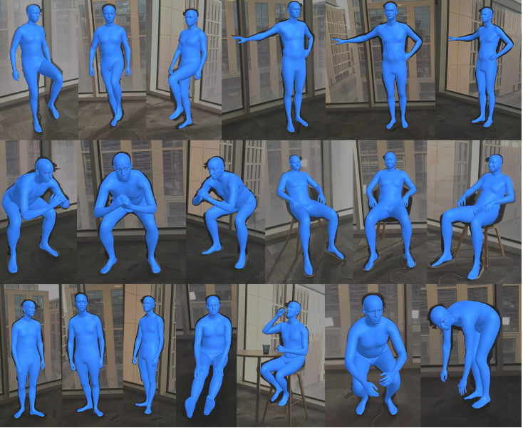

Our method enables the synthesis of novel head poses, expressions, and gazes from short cellphone videos. It allows for explicit control of the eye and jaw positions, as well as the rendering of new poses and expressions.
Part of my work at Microsoft. A report where we describe how we construct a parametric model of the face and body, including articulated hands; our rendering pipeline to generate realistic images of humans based on this body model; and a method for fitting our body model to dense landmarks predicted from multiple views. Project page
Two Heads are Better than One: Geometric-Latent Attention for Point Cloud Segmentation
BMVC 2021
An innovative two-headed attention layer that combines geometric and latent features to segment a 3D scene into semantically meaningful subsets. Each head combines local and global information, using either the geometric or latent features, of a neighborhood of points and uses this information to learn better local relationships. Paper
Segmentation and 3D Reconstruction of Rose Plants from Stereoscopic Images
Computers and Electronics in Agriculture 2020
Part of the vision module of a garden robot capable of navigating towards rose bushes and clip them according to a set of pruning rules. The method is responsible for performing the segmentation of the branches and recovering their morphology in 3D. Paper
Hybrid Multi-camera Visual Servoing to Moving Target
IROS 2018
A novel hybrid multi-camera eye-to-hand (EtoH) / eye-in-hand (EinH) approach to guide a robotarm in different tasks. The target point is assumed to bedynamic, which makes the problem more complex in termsof the switching between EtoH and EinH servoing as thespatial relationship between the robot and target changes. Paper
Short CV
- (2023 - Now) Visiting researcher
The University of Edinburgh
- (2022 - 2022) Researcher intern
Microsoft
- (2017 - 2022) Ph.D. in Informatics - 3D Computer Vision
The University of Edinburgh
- (2017- 2016) MSc. Artificial Intelligence
The University of Edinburgh
- (2011- 2015) BSc. Mechatronics Engineering
Universidad Catolica Boliviana "San Pablo"
Novel Head Pose, Expression, and Gaze Synthesis
Our method enables the synthesis of novel head poses, expressions, and gazes from short cellphone videos. It allows for explicit control of the eye and jaw positions, as well as the rendering of new poses and expressions.
Procedural Humans for Computer Vision

Recent work has shown the benefits of synthetic data for use in computer vision, with applications ranging from autonomous driving to face landmark detection and reconstruction. There are a number of benefits of using synthetic data from privacy preservation and bias elimination to quality and feasibility of annotation. Generating human-centered synthetic data is a particular challenge in terms of realism and domain-gap, though recent work has shown that effective machine learning models can be trained using synthetic face data alone. We show that this can be extended to include the full body by building on the pipeline of Wood et al. to generate synthetic images of humans in their entirety, with ground-truth annotations for computer vision applications.
In this report we describe how we construct a parametric model of the face and body, including articulated hands; our rendering pipeline to generate realistic images of humans based on this body model; an approach for training DNNs to regress a dense set of landmarks covering the entire body; and a method for fitting our body model to dense landmarks predicted from multiple views.
Procedural Humans for Computer Vision
Recent work has shown the benefits of synthetic data for use in computer vision, with applications ranging from autonomous driving to face landmark detection and reconstruction. There are a number of benefits of using synthetic data from privacy preservation and bias elimination to quality and feasibility of annotation. Generating human-centered synthetic data is a particular challenge in terms of realism and domain-gap, though recent work has shown that effective machine learning models can be trained using synthetic face data alone. We show that this can be extended to include the full body by building on the pipeline of Wood et al. to generate synthetic images of humans in their entirety, with ground-truth annotations for computer vision applications.
In this report we describe how we construct a parametric model of the face and body, including articulated hands; our rendering pipeline to generate realistic images of humans based on this body model; an approach for training DNNs to regress a dense set of landmarks covering the entire body; and a method for fitting our body model to dense landmarks predicted from multiple views.
Procedural Humans for Computer Vision
Recent work has shown the benefits of synthetic data for use in computer vision, with applications ranging from autonomous driving to face landmark detection and reconstruction. There are a number of benefits of using synthetic data from privacy preservation and bias elimination to quality and feasibility of annotation. Generating human-centered synthetic data is a particular challenge in terms of realism and domain-gap, though recent work has shown that effective machine learning models can be trained using synthetic face data alone. We show that this can be extended to include the full body by building on the pipeline of Wood et al. to generate synthetic images of humans in their entirety, with ground-truth annotations for computer vision applications.
In this report we describe how we construct a parametric model of the face and body, including articulated hands; our rendering pipeline to generate realistic images of humans based on this body model; an approach for training DNNs to regress a dense set of landmarks covering the entire body; and a method for fitting our body model to dense landmarks predicted from multiple views.
Procedural Humans for Computer Vision
Recent work has shown the benefits of synthetic data for use in computer vision, with applications ranging from autonomous driving to face landmark detection and reconstruction. There are a number of benefits of using synthetic data from privacy preservation and bias elimination to quality and feasibility of annotation. Generating human-centered synthetic data is a particular challenge in terms of realism and domain-gap, though recent work has shown that effective machine learning models can be trained using synthetic face data alone. We show that this can be extended to include the full body by building on the pipeline of Wood et al. to generate synthetic images of humans in their entirety, with ground-truth annotations for computer vision applications.
In this report we describe how we construct a parametric model of the face and body, including articulated hands; our rendering pipeline to generate realistic images of humans based on this body model; an approach for training DNNs to regress a dense set of landmarks covering the entire body; and a method for fitting our body model to dense landmarks predicted from multiple views.
Ge-Latto
Ge-Latto is a two-headed local attention layer that evaluates a patch inside the point cloud and tries to find good relationships between the neighbor points.
Hybrid Multi-camera Visual Servoing to Moving Target
A novel hybrid multi-camera eye-to-hand (EtoH) / eye-in-hand (EinH) approach to guide a robotarm in different tasks. The target point is assumed to bedynamic, which makes the problem more complex in termsof the switching between EtoH and EinH servoing as thespatial relationship between the robot and target changes.
Real-time Stereo Visual Servoing
Visual servoing to find and cut rose branches in real-time in a real garden using a robotic arm and eye-in-hand stereo camera.
Segmentation and 3D Reconstruction of Rose Plants from Stereoscopic Images
Part of the vision module of a garden robot capable of navigating towards rose bushes and clip them according to a set of pruning rules. The method is responsible for performing the segmentation of the branches and recovering their morphology in 3D.